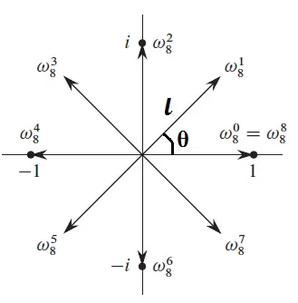
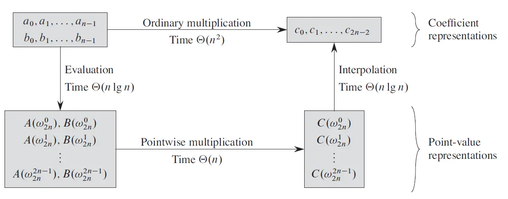

未完待续……
upd: 虽然未完，但是不想续了。
听说现在全人类都会 FFT 了？
这里做个小小结。
大概就是这样的一个东西：
A ( x ) = ∑ i = 0 n − 1 a i x i A(x) = \sum_{i=0}^{n-1}a_ix^i A ( x ) = i = 0 ∑ n − 1 a i x i
系数 ：a 0 , a 1 , a 2 , ⋯ , a n − 1 a_0, a_1, a_2,\cdots, a_{n-1} a 0 , a 1 , a 2 , ⋯ , a n − 1
次数 ：如果最高位非0 0 0 a k a_k a k A ( x ) A(x) A ( x ) k k k
多项式加法 ：若A ( x ) = ∑ i = 0 n − 1 a i x i , B ( x ) = ∑ i = 0 n − 1 b i x i , C ( x ) = ∑ i = 0 n − 1 c i x i A(x) = \sum_{i=0}^{n-1}a_ix^i, B(x) = \sum_{i=0}^{n-1}b_ix^i, C(x) = \sum_{i=0}^{n-1}c_ix^i A ( x ) = ∑ i = 0 n − 1 a i x i , B ( x ) = ∑ i = 0 n − 1 b i x i , C ( x ) = ∑ i = 0 n − 1 c i x i A ( x ) + B ( x ) = C ( x ) A(x) + B(x) = C(x) A ( x ) + B ( x ) = C ( x ) c i = a i + b i c_i=a_i+b_i c i = a i + b i
多项式乘法 ：用乘法结合率算一下即可。如A ( x ) = − 10 x + 9 , B ( x ) = 4 x − 5 A(x) =-10x+9,B(x) = 4x-5 A ( x ) = − 1 0 x + 9 , B ( x ) = 4 x − 5
A ( x ) ⋅ B ( x ) = ( − 10 x + 9 ) ⋅ ( 4 x − 5 ) = − 40 x 2 + 86 x − 45 A(x)\cdot B(x)=(-10x+9)\cdot(4x-5)=-40x^2+86x-45 A ( x ) ⋅ B ( x ) = ( − 1 0 x + 9 ) ⋅ ( 4 x − 5 ) = − 4 0 x 2 + 8 6 x − 4 5
离散卷积 ：我们常说“A ( x ) A(x) A ( x ) B ( x ) B(x) B ( x ) 简单理解为 A ( x ) A(x) A ( x ) B ( x ) B(x) B ( x ) a ⊗ b a\otimes b a ⊗ b
就是把 A ( x ) = ∑ i = 0 n − 1 a i x i A(x) = \sum_{i=0}^{n-1}a_ix^i A ( x ) = ∑ i = 0 n − 1 a i x i ( a 1 , a 2 , ⋯ , a n − 1 ) (a_1,a_2,\cdots,a_{n-1}) ( a 1 , a 2 , ⋯ , a n − 1 ) O ( n 2 ) \mathcal{O}(n^2) O ( n 2 )
随便代 n n n { ( x 0 , y 0 ) , ( x 1 , y 1 ) , ⋯ , ( x n − 1 , y n − 1 ) } \{(x_0,y_0),(x_1,y_1),\cdots,(x_{n-1},y_{n-1})\} { ( x 0 , y 0 ) , ( x 1 , y 1 ) , ⋯ , ( x n − 1 , y n − 1 ) }
如果两个多项式有 2 n 2n 2 n y y y O ( n ) \mathcal{O}(n) O ( n )
从系数表达到点值表达，我们常使用 秦九韶算法 （或称为 霍纳法则 ）
A ( x 0 ) = a 0 + x 0 ( a 1 + x 0 ( a 2 + ⋯ + ( x 0 ( a n − 2 + x 0 a n − 1 ) ) ⋯ ) ) A(x_0)=a_0+x_0(a_1+x_0(a_2+\cdots+(x_0(a_{n-2}+x_0a_{n-1}))\cdots)) A ( x 0 ) = a 0 + x 0 ( a 1 + x 0 ( a 2 + ⋯ + ( x 0 ( a n − 2 + x 0 a n − 1 ) ) ⋯ ) )
从点值表达到系数表达，我们叫做 插值 ，常使用 拉格朗日公式 ：
A ( x ) = ∑ k = 0 n − 1 y k ∏ j ≠ k ( x − x j ) ( x k − x j ) A(x)=\sum_{k=0}^{n-1}y_k\prod_{j\neq k}\frac{(x-x_j)}{(x_k-x_j)} A ( x ) = k = 0 ∑ n − 1 y k j = k ∏ ( x k − x j ) ( x − x j )
如果你把 x i x_i x i k k k i i i ∏ j ≠ k ( x − x j ) ( x k − x j ) = 1 \prod_{j\neq k}\frac{(x-x_j)}{(x_k-x_j)}=1 ∏ j = k ( x k − x j ) ( x − x j ) = 1 ∏ j ≠ k ( x − x j ) ( x k − x j ) = 0 \prod_{j\neq k}\frac{(x-x_j)}{(x_k-x_j)}=0 ∏ j = k ( x k − x j ) ( x − x j ) = 0 x j − x j = 0 x_j-x_j=0 x j − x j = 0
那就假装它是对的吧。 。
给定两个整数 p , k ( 1 ≤ p ≤ 1 0 18 , 2 ≤ k ≤ 2000 ) p, k (1\le p\le 10^{18},2\le k\le 2000) p , k ( 1 ≤ p ≤ 1 0 1 8 , 2 ≤ k ≤ 2 0 0 0 ) f ( x ) = ∑ i = 0 d − 1 a i x i f(x)=\sum_{i=0}^{d-1}a_ix^i f ( x ) = ∑ i = 0 d − 1 a i x i p ( x ) p(x) p ( x ) f ( x ) = q ( x ) ⋅ ( x + k ) + p f(x)=q(x)\cdot(x+k)+p f ( x ) = q ( x ) ⋅ ( x + k ) + p a i ∈ [ 0 , k ) , i ∈ [ 0 , d ) a_i\in[0,k),i\in[0,d) a i ∈ [ 0 , k ) , i ∈ [ 0 , d )
假设q ( x ) = ∑ i = 0 d − 2 b i x i q(x)=\sum_{i=0}^{d-2}b_ix^i q ( x ) = ∑ i = 0 d − 2 b i x i
a i = { p + k b i i = 0 b i − 1 + k b i i ≥ 1 a_i = \begin{cases} p + kb_i && i=0\\ b_{i-1} + kb_i && i \ge 1 \end{cases} a i = { p + k b i b i − 1 + k b i i = 0 i ≥ 1
我们把上式反过来：
{ p = a 0 − k b 0 b i − 1 = a i − k b i \begin{cases} p=a_0-kb_0\\ b_{i-1}=a_i-kb_i \end{cases} { p = a 0 − k b 0 b i − 1 = a i − k b i
往上迭代上去，我们就发现这个式子很像上面秦九韶算法的那个式子，所以我们得到：p = a n a n − 1 ⋯ a 1 ‾ ( − k ) p=\overline{a_na_{n-1}\cdots a_{1}}_{(-k)} p = a n a n − 1 ⋯ a 1 ( − k )
所以我们只要对 p p p − k -k − k
1 2 3 4 5 6 7 8 9 10 11 12 13 14 15 16 17 18 19 20 21 22 23 24 25 #include <cstdio> typedef long long LL;const int maxn = 2333 ;LL ans[maxn]; LL p, k; int main () scanf ("%lld%lld" , &p, &k); int top = 0 ; while (p) { ans[++top] = p % (-k); p /= -k; if (ans[top] < 0 ) p++, ans[top] += k; } printf ("%d\n" , top); for (int i = 1 ; i <= top; ++i) printf ("%d " , ans[i]); return 0 ; }
为解决复数开方问题，我们引入新数 i i i 虚数单位 ，定义i 2 + 1 = 0 i^2+1=0 i 2 + 1 = 0 a + b i ( a , b ∈ R ) a+bi(a, b\in \mathbb{R}) a + b i ( a , b ∈ R ) 复数 ，复数集用C \mathbb{C} C
先把坐标轴画出来，横的叫实轴，竖的叫虚轴，然后确定 0 0 0 z = a + b i z=a+bi z = a + b i
大概就是这样：
模长 ：上图中的r r r
辐角 ：上图中的φ \varphi φ
加减法 ：( a + b i ) + ( c + d i ) = ( a + c ) + ( b + d ) i (a+bi)+(c+di)=(a+c)+(b+d)i ( a + b i ) + ( c + d i ) = ( a + c ) + ( b + d ) i
乘法 ：( a + b i ) ( c + d i ) = a c + b c i + a d i + b d i 2 = ( a c − b d ) + ( b c + a d ) i (a+bi)(c+di)=ac+bci+adi+bdi^{2}=(ac-bd)+(bc+ad)i ( a + b i ) ( c + d i ) = a c + b c i + a d i + b d i 2 = ( a c − b d ) + ( b c + a d ) i
考虑模长为 1 1 1 ω \omega ω x x x y y y x x x x x x ω \omega ω 旋转 ？
e i u = cos u + i sin u e^{iu}=\cos u+i\sin u e i u = cos u + i sin u
我才不会告诉你我不会证。
考虑方程 x n − 1 = 0 ( n ∈ N + ) x^n-1=0\,(n\in \mathbb{N_+}) x n − 1 = 0 ( n ∈ N + ) n n n 单位根 ，记为ω n \omega_n ω n
画成图大概就是这样的：

显然，l = 1 , θ = 2 π n l=1, \theta=\frac{2\pi}{n} l = 1 , θ = n 2 π
所以ω n = cos θ + i sin θ = cos 2 π n + i sin 2 π n = e 2 π n \omega_n=\cos \theta+i\sin\theta=\cos\frac{2\pi}{n}+i\sin\frac{2\pi}{n}=e^{\frac{2\pi}{n}} ω n = cos θ + i sin θ = cos n 2 π + i sin n 2 π = e n 2 π
ω d n d k = ( e 2 π d n ) d k = ( e 2 π n ) k = ω n k \omega_{dn}^{dk}={(e^{\frac{2\pi}{dn}})}^{dk}=(e^{\frac{2\pi}{n}})^k=\omega_n^k ω d n d k = ( e d n 2 π ) d k = ( e n 2 π ) k = ω n k
ω n k + n 2 = ω n k ⋅ ω n n 2 = − ω n k \omega_n^{k+\frac{n}{2}}=\omega_n^k\cdot\omega_n^\frac{n}{2}=-\omega_n^k ω n k + 2 n = ω n k ⋅ ω n 2 n = − ω n k
所以：
( ω n k + n 2 ) 2 = ( ω n k ) 2 (\omega_n^{k+\frac{n}{2}})^2=(\omega_n^k)^2 ( ω n k + 2 n ) 2 = ( ω n k ) 2
也就是说，如果我们要算 f ( ω n k ) f(\omega^k_n) f ( ω n k ) k ∈ Z , k ∈ [ 0 , n ) k\in\mathbb{Z},k\in[0, n) k ∈ Z , k ∈ [ 0 , n ) k ∈ [ 0 , n 2 ) k\in[0,\frac{n}{2}) k ∈ [ 0 , 2 n )
由：
x ⋅ ∑ i = 0 n − 1 x i = ∑ i = 1 n x i x\cdot\sum_{i=0}^{n-1}x^i=\sum_{i=1}^{n}x^i x ⋅ i = 0 ∑ n − 1 x i = i = 1 ∑ n x i
两边同减去 ∑ i = 0 n − 1 x i \sum_{i=0}^{n-1}x^i ∑ i = 0 n − 1 x i
( x − 1 ) ∑ i = 0 n − 1 x i = x n − x 0 = x n − 1 (x-1)\sum_{i=0}^{n-1}x^i=x^n-x^0=x^n-1 ( x − 1 ) i = 0 ∑ n − 1 x i = x n − x 0 = x n − 1
故当 x ≠ 1 x\neq 1 x = 1
∑ i = 0 n − 1 x i = x n − 1 x − 1 \sum_{i=0}^{n-1}x^i=\frac{x^n-1}{x-1} i = 0 ∑ n − 1 x i = x − 1 x n − 1
所以当 ω n k ≠ 1 \omega_n^k\neq 1 ω n k = 1 n ∤ k n\nmid k n ∤ k
∑ i = 0 n − 1 ( ω n k ) i = ( ω n k ) n − 1 ω n k − 1 = 0 \sum_{i=0}^{n-1}(\omega_n^k)^i=\frac{(\omega_n^k)^n-1}{\omega_n^k-1}=0 i = 0 ∑ n − 1 ( ω n k ) i = ω n k − 1 ( ω n k ) n − 1 = 0
而当 ω n k = 1 \omega_n^k=1 ω n k = 1 n ∣ k n\mid k n ∣ k
∑ i = 0 n − 1 ( ω n k ) i = n \sum_{i=0}^{n-1}(\omega_n^k)^i=n i = 0 ∑ n − 1 ( ω n k ) i = n
综上：
∑ i = 0 n − 1 ( ω n k ) i = { 0 n ∤ k n n ∣ k \sum_{i=0}^{n-1}(\omega_n^k)^i = \begin{cases} 0& n\nmid k\\ n& n\mid k \end{cases} i = 0 ∑ n − 1 ( ω n k ) i = { 0 n n ∤ k n ∣ k
或者我们可以写成：
∑ i = 0 n − 1 ( ω n k ) i = [ n ∣ k ] × n \sum_{i=0}^{n-1}(\omega_n^k)^i = [n\mid k]\times n i = 0 ∑ n − 1 ( ω n k ) i = [ n ∣ k ] × n
其中 [ 命题 a ] [\text{命题 a}] [ 命题 a ] 1 1 1 0 0 0
1 2 3 4 5 6 7 8 9 10 11 struct Complex { double x, y; Complex (double x = 0 , double y = 0 ) { this ->x = x, this ->y = y; } friend Complex operator + (Complex a, Complex b) { return Complex (a.x + b.x, a.y + b.y); } friend Complex operator - (Complex a, Complex b) { return Complex (a.x - b.x, a.y - b.y); } friend Complex operator * (Complex a, Complex b) { return Complex (a.x * b.x - a.y * b.y, a.x * b.y + a.y * b.x); } };
首先，我们所说的多项式乘法显然是两个用系数表达的多项式之间的算法。
我们发现朴素算法的复杂度是O ( n 2 ) \mathcal{O}(n^2) O ( n 2 )
然后我们发现用系数表达好像很难优化，但多项式乘法有一个天然的优化方案，也就是如果多项式是用点值表示的，那么乘起来是 O ( n ) \mathcal{O}(n) O ( n )
所以能不能先把它们转化为点值表达，然后乘起来之后把它们插值回去呢？
很高兴的是我们有 FFT。
所以，多项式乘法就是这样完成的。

对于多项式 A ( x ) = ∑ i = 0 n a i x i A(x)=\sum_{i=0}^na_ix^i A ( x ) = ∑ i = 0 n a i x i a = ( a 0 , a 1 , ⋯ , a n − 1 ) a=(a_0, a_1, \cdots, a_{n-1}) a = ( a 0 , a 1 , ⋯ , a n − 1 ) y = ( A ( ω n 0 ) , A ( ω n 1 ) , ⋯ , A ( ω n n − 1 ) ) y=(A(\omega_n^0), A(\omega_n^1), \cdots, A(\omega_n^{n-1})) y = ( A ( ω n 0 ) , A ( ω n 1 ) , ⋯ , A ( ω n n − 1 ) ) y y y a a a 离散傅里叶变换 （DFT ），记作y = DFT n ( a ) y=\operatorname{DFT}_n(a) y = D F T n ( a ) DFT \operatorname{DFT} D F T O ( n 2 ) \mathcal{O}(n^2) O ( n 2 ) 快速傅里叶变换 （FFT ）的方法，利用上面所介绍的几个单位根的性质，可以将该过程优化到O ( n log n ) \mathcal{O}(n\log n) O ( n log n ) （感觉终于进入正题了）
折半引理使单位有了其他数没有的优势——它可以分治。
为了让分治能顺利进行，下面所涉及到的多项式的长度都可以表示为 2 k ( k ∈ Z ) 2^k(k\in \mathbb{Z}) 2 k ( k ∈ Z ) 2 k 2^k 2 k 0 0 0
我们把需要计算的多项式 A ( x ) = ∑ i = 0 n a i x i A(x)=\sum_{i=0}^na_ix^i A ( x ) = ∑ i = 0 n a i x i A 0 ( x ) = ∑ i = 0 n / 2 a 2 i x i A_0(x)=\sum_{i=0}^{n/2}a_{2i}x^i A 0 ( x ) = ∑ i = 0 n / 2 a 2 i x i A 1 ( x ) = ∑ i = 0 n / 2 a 2 i + 1 x i A_1(x)=\sum_{i=0}^{n/2}a_{2i+1}x^i A 1 ( x ) = ∑ i = 0 n / 2 a 2 i + 1 x i
A ( x ) = A 0 ( x 2 ) + x A 1 ( x 2 ) A(x) = A_0(x^2) + xA_1(x^2) A ( x ) = A 0 ( x 2 ) + x A 1 ( x 2 )
平方出现了！
我们仅需计算x = ω n k ( k = 0 ∼ n 2 ) x=\omega_n^k(k=0\sim \frac{n}{2}) x = ω n k ( k = 0 ∼ 2 n )
A ( ω n k ) = { A 0 ( ( ω n k ) 2 ) + ω n k A 1 ( ( ω n k ) 2 ) k < n 2 A 0 ( ( ω n k − n / 2 ) 2 ) − ω n k / 2 A 1 ( ( ω n k / 2 ) 2 ) k ≥ n 2 A(\omega_n^k) = \begin{cases} A_0((\omega_n^k)^2) + \omega_n^kA_1((\omega_n^k)^2) && k<\frac{n}{2}\\ A_0((\omega_n^{k-n/2})^2) - \omega_n^{k/2}A_1((\omega_n^{k/2})^2) && k \ge \frac{n}{2} \end{cases} A ( ω n k ) = { A 0 ( ( ω n k ) 2 ) + ω n k A 1 ( ( ω n k ) 2 ) A 0 ( ( ω n k − n / 2 ) 2 ) − ω n k / 2 A 1 ( ( ω n k / 2 ) 2 ) k < 2 n k ≥ 2 n
又x 2 = ( ω n k ) 2 = ω n / 2 k x^2=(\omega_n^k)^2=\omega_{n/2}^k x 2 = ( ω n k ) 2 = ω n / 2 k ω n / 2 \omega_{n/2} ω n / 2
具体可以看代码。
1 2 3 4 5 6 7 8 9 10 11 12 13 14 15 16 17 18 19 20 21 inline void FFT (Complex* a, int n) if (n == 1 ) return ; Complex *a0 = new Complex[n >> 1 ]; Complex *a1 = new Complex[n >> 1 ]; for (int i = 0 ; i < n; i += 2 ) { a0[i >> 1 ] = a[i]; a1[i >> 1 ] = a[i ^ 1 ]; } FFT (a0, n >> 1 ); FFT (a1, n >> 1 ); Complex w (1. , 0. ) , w1 (cos(pi2 / n), sin(pi2 / n)) ; for (int i = 0 ; (i << 1 ) < n; ++i) { a[i] = a0[i] + a1[i] * w; a[i + (n >> 1 )] = a0[i] - a1[i] * w; w = w * w1; } }
这样就完了吗？不是的。
现在我们所的到的是点值表示，而我们所需要的是把系数表达。所以我们需要把它插值回去。
我们把这个操作叫做 离散傅里叶变换的逆变换 （IDFT ）。
拉格朗日公式？O ( n 2 ) \mathcal{O}(n^2) O ( n 2 )
我们假设得到y = DFT ( a ) y=\operatorname{DFT}(a) y = D F T ( a ) c c c
c k = ∑ i = 0 n − 1 y i ( ω n − k ) i = ∑ i = 0 n − 1 ∑ j = 0 n − 1 ω n − k i a j ω n i j = ∑ i = 0 n − 1 ∑ j = 0 n − 1 ω n i ( j − k ) a j = ∑ j = 0 n − 1 ∑ i = 0 n − 1 ω n i ( j − k ) a j = ∑ j = 0 n − 1 a j ∑ i = 0 n − 1 ( ω n ( j − k ) ) i \begin{aligned} c_k&=\sum_{i=0}^{n-1}y_i(\omega_n^{-k})^i\\ &=\sum_{i=0}^{n-1}\sum_{j=0}^{n-1}\omega_n^{-ki}a_j\omega_n^{ij}\\ &=\sum_{i=0}^{n-1}\sum_{j=0}^{n-1}\omega_n^{i(j-k)}a_j\\ &=\sum_{j=0}^{n-1}\sum_{i=0}^{n-1}\omega_n^{i(j-k)}a_j\\ &=\sum_{j=0}^{n-1}a_j\sum_{i=0}^{n-1}(\omega_n^{(j-k)})^i \end{aligned} c k = i = 0 ∑ n − 1 y i ( ω n − k ) i = i = 0 ∑ n − 1 j = 0 ∑ n − 1 ω n − k i a j ω n i j = i = 0 ∑ n − 1 j = 0 ∑ n − 1 ω n i ( j − k ) a j = j = 0 ∑ n − 1 i = 0 ∑ n − 1 ω n i ( j − k ) a j = j = 0 ∑ n − 1 a j i = 0 ∑ n − 1 ( ω n ( j − k ) ) i
然后根据求和引理我们就可以得到：
c k = ∑ j = 0 n − 1 a j ∑ i = 0 n − 1 ( ω n ( j − k ) ) i = ∑ j = 0 n − 1 [ j − k ∣ n ] n a j \begin{aligned} c_k&=\sum_{j=0}^{n-1}a_j\sum_{i=0}^{n-1}(\omega_n^{(j-k)})^i\\ &=\sum_{j=0}^{n-1}[j-k\mid n]na_j \end{aligned} c k = j = 0 ∑ n − 1 a j i = 0 ∑ n − 1 ( ω n ( j − k ) ) i = j = 0 ∑ n − 1 [ j − k ∣ n ] n a j
由于 0 ≤ j , k < n 0\le j,k<n 0 ≤ j , k < n j − k ∣ n j-k\mid n j − k ∣ n j − k = 0 j-k=0 j − k = 0 j = k j=k j = k
故我们可以把等式写成
c k = ∑ j = 0 n − 1 [ j = k ] n a j = n a k c_k=\sum_{j=0}^{n-1}[j=k]na_j=na_k c k = j = 0 ∑ n − 1 [ j = k ] n a j = n a k
所以：
a k = 1 n c k a_k=\frac{1}{n}c_k a k = n 1 c k
所以我们只需计算 c k c_k c k
我们发现我们就是把普通的 FFT 单位根 ω n \omega_n ω n ω n − 1 \omega_n^{-1} ω n − 1
回顾上面那幅图：
我们发现让 θ \theta θ
其中的单位根ω n − 1 = cos 2 π n − i sin 2 π n \omega_n^{-1}=\cos\frac{2\pi}{n}-i\sin\frac{2\pi}{n} ω n − 1 = cos n 2 π − i sin n 2 π
具体可以看代码实现。
1 2 3 4 5 6 7 8 9 10 11 12 13 14 15 16 17 18 19 20 21 22 23 24 25 26 27 28 29 30 31 32 33 34 35 36 37 38 39 40 41 42 43 44 45 46 47 48 49 50 51 52 53 54 55 56 57 58 59 60 61 62 63 64 65 66 #include <cmath> #include <cstdio> #include <cstring> #include <iostream> using namespace std;const double pi = acos (-1. );const double pi2 = 2. * pi;struct Complex { double x, y; Complex (double x = 0 , double y = 0 ) { this ->x = x, this ->y = y; } friend Complex operator + (Complex a, Complex b) { return Complex (a.x + b.x, a.y + b.y); } friend Complex operator - (Complex a, Complex b) { return Complex (a.x - b.x, a.y - b.y); } friend Complex operator * (Complex a, Complex b) { return Complex (a.x * b.x - a.y * b.y, a.x * b.y + a.y * b.x); } }; inline void FFT (Complex* a, int n, int tp) if (n == 1 ) return ; Complex *a0 = new Complex[n >> 1 ]; Complex *a1 = new Complex[n >> 1 ]; for (int i = 0 ; i < n; i += 2 ) { a0[i >> 1 ] = a[i]; a1[i >> 1 ] = a[i ^ 1 ]; } FFT (a0, n >> 1 , tp); FFT (a1, n >> 1 , tp); Complex w (1. , 0. ) , w1 (cos(pi2 / n), tp * sin(pi2 / n)) ; for (int i = 0 ; (i << 1 ) < n; ++i) { a[i] = a0[i] + a1[i] * w; a[i + (n >> 1 )] = a0[i] - a1[i] * w; w = w * w1; } } const int maxn = 1000005 ;Complex aa[maxn << 2 ], bb[maxn << 2 ]; int main () int n, m, k; scanf ("%d%d" , &n, &m); for (k = 1 ; k <= n + m; k <<= 1 ); for (int i = 0 ; i <= n; ++i) scanf ("%lf" , &aa[i].x); for (int i = 0 ; i <= m; ++i) scanf ("%lf" , &bb[i].x); FFT (aa, k, 1 ); FFT (bb, k, 1 ); for (int i = 0 ; i < k; ++i) aa[i] = aa[i] * bb[i]; FFT (aa, k, -1 ); for (int i = 0 ; i <= n + m; ++i) printf ("%d " , (int ) (aa[i].x / k + .5 )); return 0 ; }
我们来看这段代码：
1 2 3 4 5 6 for (int i = 0 ; (i << 1 ) < n; ++i){ a[i] = a0[i] + a1[i] * w; a[i + (n >> 1 )] = a0[i] - a1[i] * w; w = w * w1; }
由于复杂度主要集中在复数运算上，所以我们可以把它优化：
1 2 3 4 5 6 7 for (int i = 0 ; (i << 1 ) < n; ++i){ t = a1[i] * w; a[i] = a0[i] + t; a[i + (n >> 1 )] = a0[i] - t; w = w * w1; }
虽然也不知道这有什么用。
我们把上面这段代码叫做 蝴蝶操作 。
我们来看一下 FFT 递归的全过程：
第一次递归时，我们把下标二进制最后一位为 0 0 0 1 1 1 0 0 0 1 1 1
我们把下标二进制分解来看看：
不知道大家有没有发现一个特点：这棵树从下往上好像做了一个二进制下的基数排序：先比较最后一位，在比较倒数第二位……也就是说，如果我们把这些数的二进制串倒过来，比如 110 就变成了 011，001 就变成了100，我们其实是对它进行了一遍排序。
于是我们把一个数的下标倒过来就是递归树底层的位置了。
O ( n log n ) \mathcal{O}(n\log n) O ( n log n )
当然我们还可以 O ( n ) \mathcal{O}(n) O ( n ) rev[i] = (rev[i >> 1] >> 1) | ((i & 1) << cs)，rev[i]表示 i i i cs表示这个二进制数字的长度（含前导 0 0 0 (i & 1) << cs 表示 i 最后一位翻转后的数字，rev[i >> 1] >> 1是 i 出最后一位外翻转得到的数字。比如 0101101，(i & 1) << cs 是1000000，而 i >> 1 是0010110，翻转之后得到 0110100，右移1 之后是0011010，在或上前面的1000000，得到的是1011010。
1 2 3 4 5 6 7 8 9 10 11 12 13 14 15 16 17 18 19 20 21 22 23 24 25 26 27 28 29 30 31 32 33 34 35 36 37 38 39 40 41 42 43 44 45 46 47 48 49 50 51 52 53 54 55 56 57 58 59 60 61 62 63 64 65 66 67 68 69 70 71 #include <cmath> #include <cstdio> #include <iostream> #include <algorithm> using namespace std;const int maxn = 1000005 ;const double pi2 = 2. * acos (-1. );struct Complex { double x, y; Complex (double x = 0 , double y = 0 ) { this ->x = x, this ->y = y; } friend Complex operator + (Complex a, Complex b) { return Complex (a.x + b.x, a.y + b.y); } friend Complex operator - (Complex a, Complex b) { return Complex (a.x - b.x, a.y - b.y); } friend Complex operator * (Complex a, Complex b) { return Complex (a.x * b.x - a.y * b.y, a.x * b.y + a.y * b.x); } }; int rev[maxn << 2 ];Complex aa[maxn << 2 ], bb[maxn << 2 ]; inline void FFT (Complex* a, int n, int tp) for (int i = 0 ; i < n; ++i) if (i < rev[i]) swap (a[i], a[rev[i]]); for (int s = 2 ; s <= n; s <<= 1 ) { Complex w1 (cos(pi2 / s), tp * sin(pi2 / s)) , w, tmp ; for (int i = 0 ; i < n; i += s) { w = Complex (1. , 0. ); for (int j = 0 ; (j << 1 ) < s; ++j, w = w * w1) { tmp = w * a[i + j + (s >> 1 )]; a[i + j + (s >> 1 )] = a[i + j] - tmp; a[i + j] = a[i + j] + tmp; } } } } int main () int n, m; scanf ("%d%d" , &n, &m); for (int i = 0 ; i <= n; ++i) scanf ("%lf" , &aa[i].x); for (int i = 0 ; i <= m; ++i) scanf ("%lf" , &bb[i].x); int l = 1 , cs = 0 ; while (l <= n + m) { l <<= 1 ; cs++; } for (int i = 0 ; i < l; ++i) rev[i] = (rev[i >> 1 ] >> 1 ) | ((i & 1 ) << (cs - 1 )); FFT (aa, l, 1 ); FFT (bb, l, 1 ); for (int i = 0 ; i < l; ++i) aa[i] = aa[i] * bb[i]; FFT (aa, l, -1 ); for (int i = 0 ; i <= n + m; ++i) printf ("%d " , (int ) (aa[i].x / l + .5 )); return 0 ; }
代码长度差不多（上面的是迭代实现），但速度和内存上的差距是很大的。
高精乘法就是把两个大数当成多项式乘起来，其实就是普通 FFT，就直接上代码了。
1 2 3 4 5 6 7 8 9 10 11 12 13 14 15 16 17 18 19 20 21 22 23 24 25 26 27 28 29 30 31 32 33 34 35 36 37 38 39 40 41 42 43 44 45 46 47 48 49 50 51 52 53 54 55 56 57 58 59 60 61 62 63 64 65 66 67 68 69 70 71 72 73 74 75 76 77 78 79 80 81 82 83 84 85 86 87 #include <cmath> #include <cstdio> #include <cstring> #include <iostream> #include <algorithm> using namespace std;typedef long long LL;const int maxn = 60005 ;const double pi2 = 2. * acos (-1 );struct Complex { double x, y; Complex (double x = 0 , double y = 0 ) { this ->x = x, this ->y = y; } friend Complex operator + (Complex a, Complex b) { return Complex (a.x + b.x, a.y + b.y); } friend Complex operator - (Complex a, Complex b) { return Complex (a.x - b.x, a.y - b.y); } friend Complex operator * (Complex a, Complex b) { return Complex (a.x * b.x - a.y * b.y, a.x * b.y + a.y * b.x); } }; int rev[maxn << 2 ];inline void FFT (Complex* a, int n, int tp) for (int i = 0 ; i < n; ++i) if (i < rev[i]) swap (a[i], a[rev[i]]); for (int s = 2 ; s <= n; s <<= 1 ) { Complex w1 (cos(pi2 / s), tp * sin(pi2 / s)) , w, t ; for (int i = 0 ; i < n; i += s) { w = Complex (1. , 0. ); for (int j = 0 ; (j << 1 ) < s; ++j, w = w1 * w) { t = a[i + j + (s >> 1 )] * w; a[i + j + (s >> 1 )] = a[i + j] - t; a[i + j] = a[i + j] + t; } } } } Complex aa[maxn << 2 ], bb[maxn << 2 ]; LL ans[maxn << 2 ]; char s[maxn];int main () int n; scanf ("%d" , &n); scanf ("%s" , s); for (int i = 0 ; i < n; ++i) aa[i].x = s[n - i - 1 ] ^ 48 ; scanf ("%s" , s); for (int i = 0 ; i < n; ++i) bb[i].x = s[n - i - 1 ] ^ 48 ; int l = 1 , cs = 0 ; while (l < (n << 1 )) { l <<= 1 ; cs++; } for (int i = 0 ; i < l; ++i) rev[i] = (rev[i >> 1 ] >> 1 ) | ((i & 1 ) << (cs - 1 )); FFT (aa, l, 1 ); FFT (bb, l, 1 ); for (int i = 0 ; i < l; ++i) aa[i] = aa[i] * bb[i]; FFT (aa, l, -1 ); for (int i = 0 ; i < l; ++i) { ans[i] += (LL) (aa[i].x / l + .5 ); ans[i + 1 ] += ans[i] / 10 ; ans[i] %= 10 ; } while (!ans[l] && l) --l; while (~l) printf ("%lld" , ans[l--]); return 0 ; }
按照国际惯例，uva 的题是一定要放 pdf 的：
有一副扑克，对于每个正合数 p p p 4 4 4 S,H,C,D \text{S,H,C,D} S,H,C,D n n n
多组数据，每组数据输入 a , b , c a, b, c a , b , c c c c n = a , n = a + 1 , ⋯ , n = b n=a,n=a+1,\cdots,n=b n = a , n = a + 1 , ⋯ , n = b
我们令 f [ i ] f[i] f [ i ] i i i d p dp d p O ( n 2 ) \mathcal{O}(n^2) O ( n 2 ) f 1 [ i ] , f 2 [ i ] f_1[i],f_2[i] f 1 [ i ] , f 2 [ i ] f [ i ] f[i] f [ i ] f 1 f_1 f 1 f 2 f_2 f 2 f [ i ] = ∑ j + k = i f 1 [ j ] + f 2 [ k ] f[i] = \sum_{j+k=i} f_1[j]+f_2[k] f [ i ] = ∑ j + k = i f 1 [ j ] + f 2 [ k ]
然后大力 FFT。
对了这题要开long double。
1 2 3 4 5 6 7 8 9 10 11 12 13 14 15 16 17 18 19 20 21 22 23 24 25 26 27 28 29 30 31 32 33 34 35 36 37 38 39 40 41 42 43 44 45 46 47 48 49 50 51 52 53 54 55 56 57 58 59 60 61 62 63 64 65 66 67 68 69 70 71 72 73 74 75 76 77 78 79 80 81 82 83 84 85 86 87 88 89 90 91 92 93 94 95 96 97 98 99 100 101 102 103 104 105 106 107 108 109 110 111 112 113 114 115 116 117 118 119 120 121 122 123 124 125 126 127 128 129 130 131 132 133 134 135 136 137 138 139 140 141 142 143 144 145 146 147 148 #include <cmath> #include <cctype> #include <cstdio> #include <cstring> #include <bitset> #include <iostream> #include <algorithm> using namespace std;typedef long double LD;typedef long long LL;inline char gc () static const int L = 23333 ; static char sxd[L], *sss = sxd, *ttt = sxd; if (sss == ttt) { ttt = (sss = sxd) + fread (sxd, 1 , L, stdin); if (sss == ttt) return EOF; } return *sss++; } #define dd c = gc() inline char read (int & x) x = 0 ; char dd; for (; !isdigit (c); dd) if (c == EOF) return EOF; for (; isdigit (c); dd) x = (x << 1 ) + (x << 3 ) + (c ^ 48 ); return c; } #undef dd const int maxn = 50005 << 2 ;const LD pi2 = acos (-1. ) * (LD) 2. ;int pp[maxn << 2 ];inline void pre () int n = 50000 ; for (int i = 2 ; i <= n; ++i) { if (!pp[i]) { for (int j = i << 1 ; j <= n; j += i) pp[j] = 1 ; } } } struct Complex { LD x, y; Complex (LD a = 0. , LD b = 0. ) { x = a, y = b; } friend Complex operator + (Complex a, Complex b) { return Complex (a.x + b.x, a.y + b.y); } friend Complex operator - (Complex a, Complex b) { return Complex (a.x - b.x, a.y - b.y); } friend Complex operator * (Complex a, Complex b) { return Complex (a.x * b.x - a.y * b.y, a.x * b.y + b.x * a.y); } }; int rev[maxn << 2 ];inline void FFT (Complex* a, int n, int tp) for (int i = 0 ; i < n; ++i) if (i < rev[i]) swap (a[i], a[rev[i]]); for (int s = 2 ; s <= n; s <<= 1 ) { Complex w, w1 = Complex (cos (pi2 / s), tp * sin (pi2 / s)), tmp; for (int i = 0 ; i < n; i += s) { w = Complex (1. , 0. ); for (int l = 0 ; (l << 1 ) < s; ++l, w = w * w1) { tmp = a[i + l + (s >> 1 )] * w; a[i + l + (s >> 1 )] = a[i + l] - tmp; a[i + l] = a[i + l] + tmp; } } } } Complex aa[maxn << 2 ], bb[maxn << 2 ], cc[maxn << 2 ], dd[maxn << 2 ]; inline void solve (int n, int l, int r) int L = r + 1 ; int len = 1 , cs = -1 ; while (len <= (L << 2 )) { len <<= 1 ; cs++; } memset (aa, 0 , sizeof (aa)); memset (bb, 0 , sizeof (bb)); memset (cc, 0 , sizeof (cc)); memset (dd, 0 , sizeof (dd)); for (int i = 0 ; i < len; ++i) rev[i] = (rev[i >> 1 ] >> 1 ) | ((i & 1 ) << cs); for (int i = 1 ; i < r; ++i) aa[i] = bb[i] = cc[i] = dd[i] = Complex ((LD) pp[i], 0. ); for (int i = 1 , t; i <= n; ++i) { char c = read (t); switch (c) { case 'S' : aa[t].x = 0. ; break ; case 'H' : bb[t].x = 0. ; break ; case 'C' : cc[t].x = 0. ; break ; case 'D' : dd[t].x = 0. ; break ; } } FFT (aa, len, 1 ), FFT (bb, len, 1 ), FFT (cc, len, 1 ), FFT (dd, len, 1 ); for (int i = 0 ; i < len; ++i) aa[i] = aa[i] * bb[i] * cc[i] * dd[i]; FFT (aa, len, -1 ); for (int i = l; i <= r; ++i) printf ("%lld\n" , (LL) ((aa[i].x / len) + .5 )); puts ("" ); } signed main () pre (); int x, y, z; while (read (x) != EOF && read (y) != EOF && read (z) != EOF && (x || y || z)) solve (z, x, y); return 0 ; }
我们发现 FFT 的复杂度很优秀，然而不能取模。
那我们有没有什么办法让它能取模呢？
我们考虑从单位根下手。
我们看单位根的定义：
ω n n = 1 \omega_n^n=1 ω n n = 1
有没有关于取模等于 1 1 1
相信大家都想到了费马小定理：
a p − 1 ≡ 1 ( m o d p ) a^{p-1}\equiv 1\pmod p a p − 1 ≡ 1 ( m o d p )
当然 p p p
于是我们可以联立方程：
a p − 1 ≡ ω n n ( m o d p ) a^{p-1}\equiv\omega^n_n\pmod p a p − 1 ≡ ω n n ( m o d p )
两边同开 n n n
a p − 1 n ≡ ω n ( m o d p ) a^{\frac{p-1}{n}}\equiv \omega_n\pmod p a n p − 1 ≡ ω n ( m o d p )
如果 n ∣ p − 1 n\mid p-1 n ∣ p − 1 ω n \omega_n ω n a p − 1 n a^{\frac{p-1}{n}} a n p − 1
我们发现在做 FFT 时，n n n 2 2 2 p p p 2 k × t − 1 ( k , t ∈ N ) 2^k\times t-1(k,t\in \mathbb{N}) 2 k × t − 1 ( k , t ∈ N ) 2 k ≥ n 2^k\ge n 2 k ≥ n
主要用的是998244353 = 119 × 2 23 + 1 998244353=119\times2^{23}+1 9 9 8 2 4 4 3 5 3 = 1 1 9 × 2 2 3 + 1